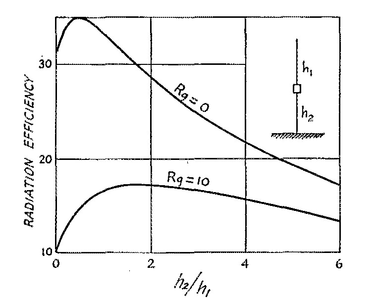
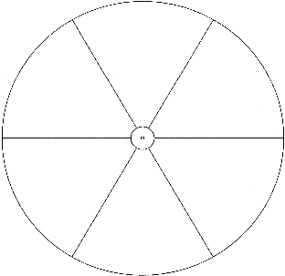
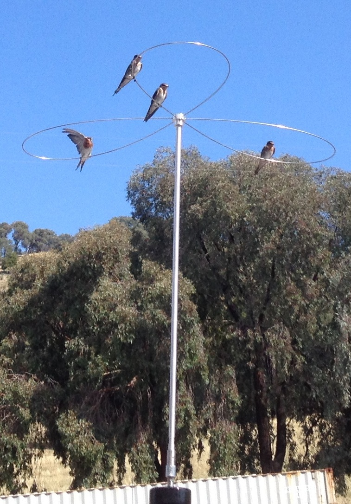

Recovered article. HTML body is from Common Crawl (text only); images came from the Sep 2022 iOS PDF:
Antenna Cap Hat.pdf ·
8 extracted images & links ·
8 of 8 images merged inline (aspect-ratio matched). Original src preserved on each
<img> as
data-original-src.
Contents: Basics; Design Considerations; Conclusions;
Basics
 Cap hats are not new innovations, and have been used in one form or another almost since the dawn of radio. The first patent covering them (US patent #609,154) was issued to Sir Oliver Joseph Lodge, a British physicist, in 1898. His abstract of the patent reads in part, "...As charged surfaces... I prefer, for the purpose of combining low resistance with great electrostatic capacity, cones or triangles or other such diverging surfaces with the vertices adjoining and their larger areas spreading out into space..."
Cap hats are not new innovations, and have been used in one form or another almost since the dawn of radio. The first patent covering them (US patent #609,154) was issued to Sir Oliver Joseph Lodge, a British physicist, in 1898. His abstract of the patent reads in part, "...As charged surfaces... I prefer, for the purpose of combining low resistance with great electrostatic capacity, cones or triangles or other such diverging surfaces with the vertices adjoining and their larger areas spreading out into space..."
The reason he chose the design was to reduce the Q of the antenna system, thus increasing its bandwidth. Based on his comments from the patent, he also realized that the input impedance would increase, and the overall length at resonance would decrease! This is exactly what cap hats do, if installed correctly!
Based on photos appearing in QST, cap hats atop HF mobile antennas date to early 1930s. Then, in 1954, the ARRL published their first Mobile Manual which was a compilation of the various mobile articles which had appeared previously in QST. Several cap hat examples were included, but unfortunately they were shown incorrectly installed directly atop the coil (see photo, lower left).
Fast-forwarding a few years, the July, 1961 issue of QST, contained a short article which covered the second-annual California Mobilecade and Field Trials. That article was highlighted by a photo montage (shown right) of 16 contestants entered into the field trail (click to open in new window). David Evans, WA6JJG, won that competition, and was rewarded with a kiss! Take note of the three loop, cap hat design directly above David's head, and one that is installed well above the coil where it should be! The next few paragraphs explain why position is so important.

The radiation resistance of a vertical antenna is a function of its electrical length, and how the current flows over that length. However, in a mobile scenario, we don't have the luxury to increase the overall height to much more than 13 feet, or about 11 feet in physical length. And we can't reduce the ground losses significantly, bonding notwithstanding. Thus the only way we can increase efficiency, besides reducing ohmic losses (coil Q?), is to increase the radiation resistance. A good example is the difference in radiation resistance between a base loaded antenna, and a center loaded one.
A base loaded antenna has the highest current point (node) just above the loading coil. But if we relocate the loading coil to the approximate center of the antenna, the current node will rise as well. This fact doubles the radiation resistance. It would double the efficiency too (all else being equal), but there is a bit more coil (Q) losses as center loading approximately doubles the required reactance for resonance. We could more the coil higher up (higher than center), but increasing Q losses soon offset the increase in radiation resistance. This fact is illustrated in the ground losses vs. optimal coil position chart shown at right. Fortunately, there is a better solution, and that is by capacitively loading the antenna by installing a cap hat!
Generally speaking, the more capacitance above the loading coil, the higher the radiation resistance. However, cap hats increase the wind loading and bending moment stresses significantly more than a whip. Therefore, just like coil position, there is a physical and practical limit which must be weighed against the increase in efficiency. And, it should be noted that too large of a cap hat (relative to the wave length) will cause the cap hat to radiate essentially reducing efficiency, not improving it. Thus, the three loop design discussed below, is a near-optimal, overall design weighing all of the factors.
☜Return☜
Design Considerations

 Cap haps come in a variety of designs, but some of them perform better than others. For example, a spoke design like the one shown at right, don't work nearly as well as those with an enclosing rim, like the one shown below it. The reason is, for a given overall diameter, the outer rim almost doubles the effective capacitance. This has to be weighted against the slightly increased wind loading, and a greater chance the cap hat could catch on an errant tree limb.
Cap haps come in a variety of designs, but some of them perform better than others. For example, a spoke design like the one shown at right, don't work nearly as well as those with an enclosing rim, like the one shown below it. The reason is, for a given overall diameter, the outer rim almost doubles the effective capacitance. This has to be weighted against the slightly increased wind loading, and a greater chance the cap hat could catch on an errant tree limb.
As mentioned above, there is a practical limit to the maximum diameter. There is a limit to the length of the mast supporting them too. Too short, and there will be excessive capacitive loading between the cap hat and the body of the vehicle. Too long, and even the sturdiest of antennas will fail due to the excessive bending moment cause by wind loading.

Weight is another important factor. One commercial design weighs in at just over 6 pounds. So, not only must the antenna hold it up weight wise, it must be capable of withstanding the bending moment of acceleration and deceleration, irrespective of the wind loading.
The position of the cap hat within the antenna's length is also very important. For maximum efficiency, it must be placed at the very top of the antenna. Ones mounted atop the coil as shown at left, will indeed increase bandwidth, but at the expense of drastically-reduced efficiency!
 If one considers all of the above factors, the three loop design shown left, offers the best overall performance. In this specific case, the mast if 4 feet in length, and the loops are 72 inches long. The effective diameter is approximately 5 feet. Mounted atop a Scorpion 680, the antenna can be tuned from 80 through 17 meters. The stock cap hat from Scorpion uses a 3 foot mast, and 60 inch wires, and allows the inclusion of 15 meters.
If one considers all of the above factors, the three loop design shown left, offers the best overall performance. In this specific case, the mast if 4 feet in length, and the loops are 72 inches long. The effective diameter is approximately 5 feet. Mounted atop a Scorpion 680, the antenna can be tuned from 80 through 17 meters. The stock cap hat from Scorpion uses a 3 foot mast, and 60 inch wires, and allows the inclusion of 15 meters.
Four loops could be used, but this increases wind loading by 1/3, with only a very small increase in effectiveness. A longer mast isn't viable, as this would place the cap hat above the nominal legal limit of 13.6 feet in most states.
There are several commercial designs on the market which use what would best be described as globular wire cages. Besides the excess wind loading they represent, they place the cap hat too close to the body of the vehicle, and in some cases, too close to the loading coil. The resulting stray capacitance loading is a detriment to efficiency. However, bandwidth does increase, but at the expense a drastically-reduced efficiency!
There is one question which remains, and that is the actual wind loading. It is easy enough to calculate the loading on the mast (≈3 pounds at 60 mph), but the wires are dynamic (blowing in the wind) making calculations difficult. However, this is a way to estimate the wind loading close enough. Here's how it was done.
A small whip spring was temporarily installed in place of the QD (quick disconnect). A piece of Spectra, 50 pound test fishing line was attached to one of the loops. The other end was brought into the cab through the moon roof. With the help of a passenger, the vehicle was driven at 60 mph, and the line let out just to the point of bowing in the wind. A reference point was marked on the fishing line. Back in the driveway, a second piece of Spectra was attached to the hub, and to a hand held scale. Enough pull was exerted to move the first line to its reference point, and the scale was read. Surprisingly enough, the scale read just 6 pounds. Obviously, this non scientific exercise isn't perfect, but it does give one an indication of the bending-moment forces applied to the top of the antenna.
Two salient points: Cap hats must be installed at the very top of the antenna. Nothing should be mounted above the cap hat! Straight wires, without an enclosing (conductive) ring, are next to worthless.
☜Return☜
Conclusions

Some folks think cap hats are for the birds! But, if you want the best performance (read that as the highest efficiency) out of an HF mobile antenna, they are the only way to accomplish the goal, yet maintain some modicum of practicality. They have some drawbacks as any system will have, but the pluses outweigh the minuses.
Unfortunately, the increase in efficiency cannot easily be measured without a bench-full of expensive equipment. But you can infer it in other ways. One of those is to count the number of coil turns showing above the contact ring on a screwdriver antennas. Here's how the antenna stacks up with the cap hat, versus a standard 102 inch, 17-7, stainless steel whip.
On 80 meters with the modified Scorpion cap hat installed, ≈55 turns show above the contact ring. Using the whip, ≈80 show. On 40 meters, ≈12 turns show above the contact ring. Using the whip, ≈20 show. On 20 meters, ≈3.0 turns show above the contact ring. Using the whip, ≈6.75 show. And in each case, the measured input impedance increased approximately 30%, indicating an increase in radiation resistance.
Another good attribute is the fact the top of the antenna is under 13 feet, even when tuned to 80 meters. In some areas of the country, this is all but a prerequisite!
☜Return☜
Home
 Cap hats are not new innovations, and have been used in one form or another almost since the dawn of radio. The first patent covering them (US patent #609,154) was issued to Sir Oliver Joseph Lodge, a British physicist, in 1898. His abstract of the patent reads in part, "...As charged surfaces... I prefer, for the purpose of combining low resistance with great electrostatic capacity, cones or triangles or other such diverging surfaces with the vertices adjoining and their larger areas spreading out into space..."
Cap hats are not new innovations, and have been used in one form or another almost since the dawn of radio. The first patent covering them (US patent #609,154) was issued to Sir Oliver Joseph Lodge, a British physicist, in 1898. His abstract of the patent reads in part, "...As charged surfaces... I prefer, for the purpose of combining low resistance with great electrostatic capacity, cones or triangles or other such diverging surfaces with the vertices adjoining and their larger areas spreading out into space..."


{kind=link}
{kind=link}
{kind=link}